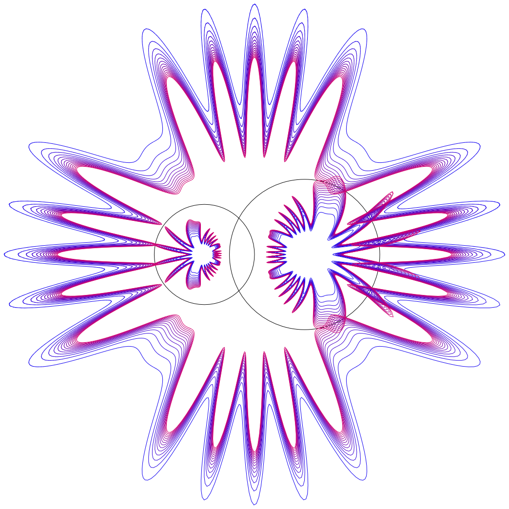
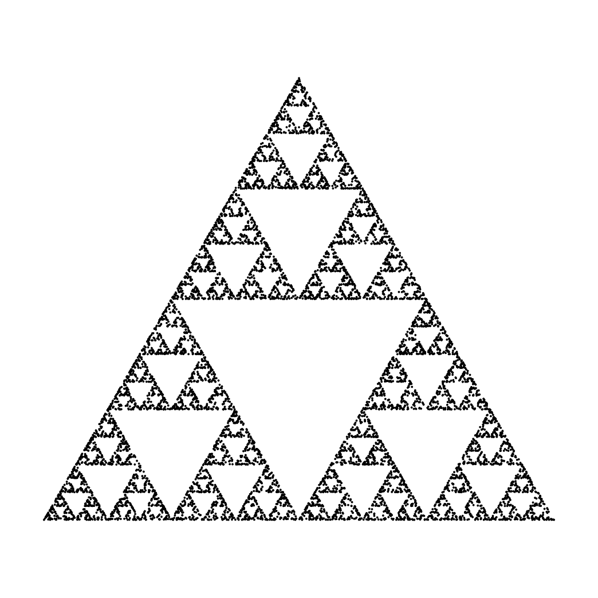
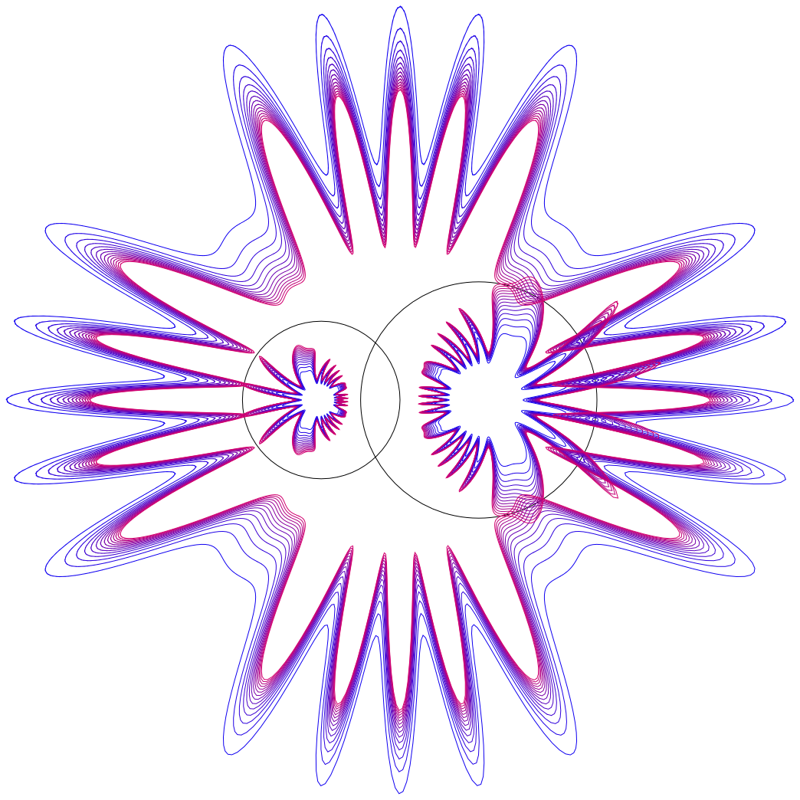
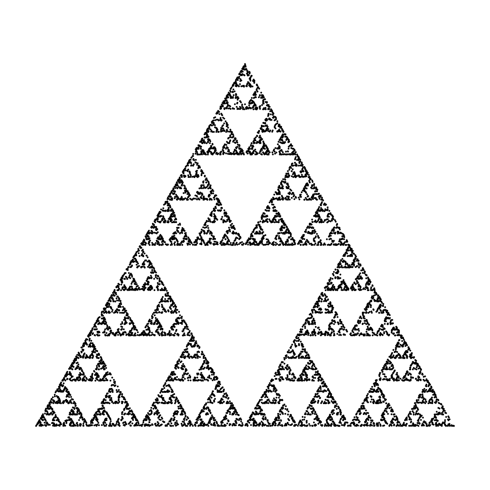

Tordie Documentation
Tordie is a powerful mathematical tool, capable of generating precise vector graphics for use in Origami and mathematical visualisations. Tordie was specifically created with the intention of providing a simple and accurate way to represent mathematicals operations through vector graphics in order to score them onto a page for real world folding.
Tordie was started in January 2021, with many different implementations and structures. Tordie is currently in its fourth iteration, and is being actively developed.
Examples
Below are some simple examples of the abilities Tordie will have. Not all the features used to create these graphics have been brought into this version of Tordie, but they will be soon.
 



Source Code
The source code for Tordie is available on GitHub. Please note that this code is extremely messy and is not intended for public use. The code is also not particularly user friendly and has not been designed for commercial use.